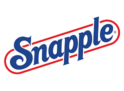
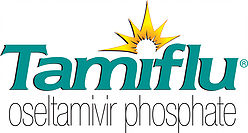

|
ABC |
Puzzability worked behind the scenes to develop game show content for ABC television. |
 |
Alliance Bernstein
| Puzzability created and supervised a 100-person team-building event for the investment management firm Alliance Bernstein. |
 |
Amtrak |
While traveling on Amtrak trains, readers of Arrive magazine enjoy solving Puzzability crossword and sudoku puzzles.
|
 |
AT&T |
Puzzability wrote an online mystery game to help promote AT&T's collect calling service. |
 |
Bits & Pieces |
The jigsaw puzzle seller Bits & Pieces challenged visitors to its website with a long-running series of Puzzability puzzles. |
|
Boston.com |
A series of business-themed puzzles, created for the Boston Globe's online business section boston.com, gave solvers a run for their money.
|
 |
Chef Boyardee |
Puzzability cooked up special puzzles featuring Chef Jr. that were found under Chef Boyardee can labels. |
 |
Chicago Tribune |
Puzzability created a series of book-themed crosswords for the online version of the Chicago Tribune's book section. |
|
Colgate University |
Every issue of Colgate's alumni magazine The Scene features a Colgate-themed puzzle by Puzzability. |
 |
CourtTV |
Puzzability consulted on a crime-based game show for CourtTV. |
 |
Disney Adventures |
Every month for eight years, Puzzability created the entire puzzle section for Disney Adventures magazine. |
|
Esquire |
Puzzability created special sets of interconnected puzzles and challenging quizzes for Esquire magazine's Genius Issues. |
 |
First for Women |
Puzzability creates tricky visual word puzzles for every issue of First for Women magazine. |
 |
Hershey's |
Hershey's Kidztown site featured kid-friendly Puzzability puzzles specially created around Hershey themes. |
 |
In Touch Weekly |
For each issue of In Touch Weekly magazine, Puzzability created a set of celebrity-themed puzzles, including a crossword and a photo puzzle. |
|
National Constitution Center |
Student groups heading to the National Constitution Center in Philadelphia receive a fun and informative set of interconnected Puzzability puzzles that set the stage for their class trip. |
 |
The New Yorker |
Puzzability teamed with The New Yorker to create puzzle pages for the magazine, and later a complete book, that uniquely combine its puzzles with the magazine's classic cartoons. |
 |
The New York Times |
Puzzability periodically takes over the op-ed page of The New York Times with a set of interconnected puzzles on timely themes. |
 |
Nickelodeon Magazine |
Puzzability wrote and designed a special mystery comic for the readers of Nickelodeon Magazine. |
 |
Reader's Digest |
Puzzability puzzles have appeared in Reader's Digest magazine as well as within its Readers Only website. |
|  |
Snapple |
Rebus puzzles found inside Snapple bottle caps were created by Puzzability. |
 |
Spirit Magazine |
Every month, Puzzability creates and produces the entire puzzle section for Southwest Airlines' Spirit Magazine. |
|
Strong National
Museum of Play |
Puzzability entertained families visiting the Strong National Museum of Play with a specially created audience-participation puzzle show. |
|  |
Tamiflu |
While they sat sneezing in the waiting room, patients solved Puzzability puzzles in a brochure created for Tamiflu. |
 |
Total Rewards |
Every issue of Harrah's Total Rewards magazine features a gaming-themed Puzzability puzzle. |
 |
Woman's World |
Each issue of Woman's World magazine featured a set of puzzles from Puzzability. |